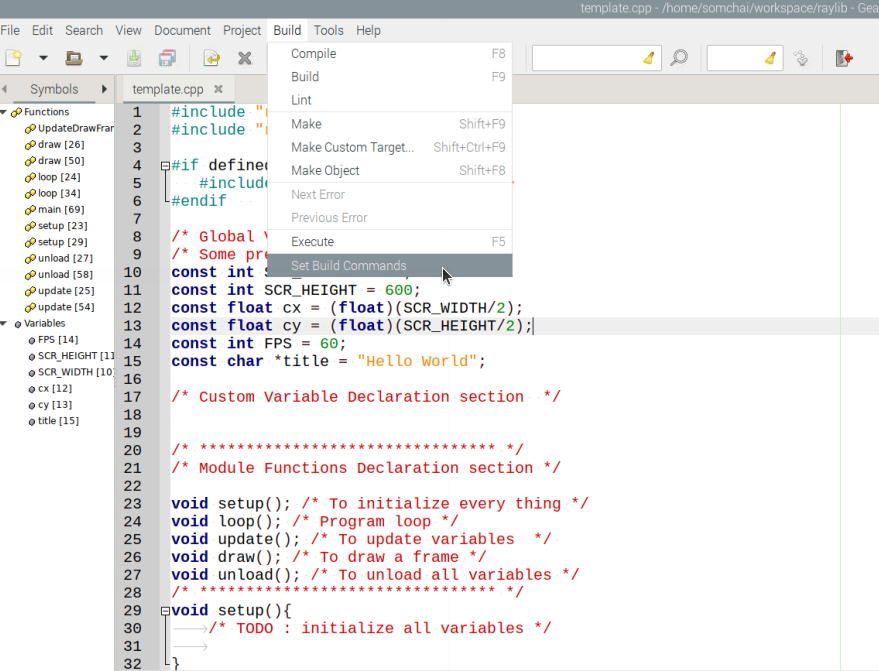
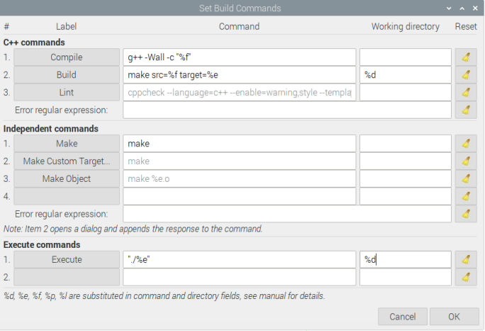
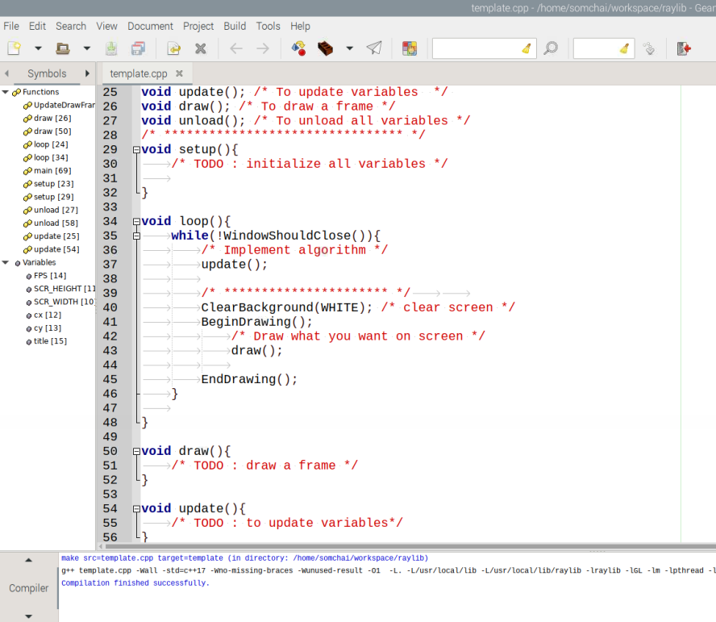
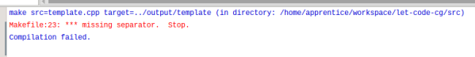

การติดตั้ง Raylib บน Raspberry Pi
จะข้ามขั้นตอนการเตรียม Raspberry Pi ให้พร้อมสำหรับใช้งาน ซึ่งผุ้อ่านสามารถศึกษาเองได้จาก Raspberry Pi Documentation
สร้าง Shared libraries
จะใช้งาน raylib ต้องทำการ compile รหัสต้นฉบับ (source code)เพื่อให้ได้ shared library มา มีทางเลือก 2 ทางคือ
-
ทำตามขั้นตอนที่บอกไว้ในเอกสารจากผู้พัฒนา. หรือ
-
ใช้ shared libraries ที่ผู้เขียนก็ได้จัดทำไว้แล้วสำหรับ Raspberry Pi (ตั้งแต่ PiZero-W ไปจนถึงรุ่นล่าสุด) ที่ติดตั้งระบบปฏิบัติการ Raspberry Pi OS ซึ่งใช้ source code รุ่น 4.5.0 ดังนี้
-
ติดตั้ง system libraries
sudo apt-get install libx11-dev libxcursor-dev libxinerama-dev libxrandr-dev libxi-dev libasound2-dev mesa-common-dev libgl1-mesa-dev mesa-utils -
download shared libraries และ header files
- raylib450-rpi32.tar.gz สำหรับระบบปฎิบัติการแบบ 32 bit หรือ
- raylib450-rpi64.tar.gz สำหรับระบบปฎิบัติการแบบ 64 bit
-
สร้าง directory สำหรับ shared libraries และ header files
sudo mkdir /usr/local/lib/raylibsudo mkdir /usr/local/include/raylib -
แตกไฟลฺ์ raylib450-rpi32.tar.gz หรือ raylib450-rpi64.tar.gz
tar xzvf raylib450-rpi32.tar.gztar xzvf raylib450-rpi64.tar.gzจะพบมี directory ชื่อ include และ lib ภายในมี shared libraries และ header files อยู่
-
นำ libraylib.so.4.5.0,libraylib.so.450 และ libraylib.so ไปวางไว้ใน /usr/local/lib/raylib
sudo mv lib/*.* /usr/local/lib/raylib -
นำ header files ทั้งหมดไปวางไว้ใน /usr/local/include/raylib
sudo mv include/*.* /usr/local/include/raylib -
สร้างไฟล์ชื่อ raylib.conf ใน /etc/ld.so.conf.d/
sudo nano /etc/ld.so.conf.d/raylib.conf -
พิมพ์ข้อความ /usr/local/lib/raylib ลงใน raylib.conf แล้วทำการบันทึก (กด Ctrl-S เพื่อบันทึก แล้ว กด Ctrl-X เพื่อออกจากโปรแกรม nano)
-
แจ้งให้ system รับทราบตำแหน่งของ shared library
sudo ldconfig
-
-
เตรียมพื้นที่ทำงาน
แนะนำให้สร้าง directory สำหรับโครงงาน หรืออาจเพิ่ม sub-directory ภายในเพื่อแยกกันระหว่างส่วนที่เป็น source code และ executable ด้วยก็ได้ แล้วทำการ download 2 files ที่เตรียมไว้ให้มาเก็บไว้ใน directory ที่สร้างไว้
Makefile คือไฟล์ที่ใช้เก็บเงื่อนไขการแปลงจาก source code ไปสู่ executable หรือขั้นตอนที่เรียกว่า "build" และ template.cpp คือ ไฟล์ที่ผู้เขียนสร้างไว้เพื่อใช้เป็นต้นแบบในการสร้าง source code อื่นที่จะเรียนกันต่อไปในโครงงานนี้ต่อไป
การเตรียม Code Editor
ในโครงงานนี้ผู้เขียนจะใช้ Geany เป็น code editor (ท่านสามารถเลือกใช้ตัวอื่นได้ความถนัด) เนื่องจากเป็น text editor ที่ติดตั้งมาพร้อมใช้งานกับ Raspberry Pi OS ทุกรุ่นอยู่แล้ว อีกทั้ง Geany สามารถถูกปรับแต่งให้สามารถเรียกใช้ compiler และ run program ที่ได้ โดยไม่ต้องเปิดหน้าต่างเพื่อเรียกใช้ command ซึ่งก็ให้ความสะดวกเพียงพอแล้ว.
- เรียก Geany เปิดไฟล์ template.cpp ที่ดาวน์โหลดมาก่อนหน้า เพื่อให้ Geany รับทราบว่าไฟล์ที่กำลังใช้งานเป็นไฟล์ C++ แล้วคลิ๊ก Build บนเมนูบาร์เพื่อเรียกใช้ "Set Build Commands" ดังภาพ

- มองหา Build (ในคอลัมน์ Label) ในส่วนของ C++ commands พิมพ์ข้อความ make src=%f target=%e ในช่องตรงกลาง (คอลัมน์ Command) และ %d ในช่องที่ 3 (คอลัมน์ Working directory) ในส่วนของ Execute commands ให้เติม ./%e ในช่องตรงกลางและ %d ใ่นช่อง working directory แล้วคลิ๊ก OK

- ทดสอบโดยการกด F9 หรือ คลิ๊ก Build -> Build จากเมนูบาร์เพื่อการ build (การแปลงชุดคำสั่งให้กลายเป็น executable file) หากการติดตั้งทุกอย่างถูกต้องจะได้เห็น ข้อความ "Compilation finished successfully." ใน message window

- ในกรณีไม่สามารถ Build ได้ และพบข้อความบน Message Window Makefile:23 missing separator. Stop

ทำการแก้ไขดังนี้
- เปิด Makefile ด้วย Geany
- เลื่อนไปที่บรรทัด 23 เลื่อน cursor ไปที่หน้าอักษรตัวแรกของบรรทัดแล้วทำการเคาะแป้น Tab 1 ครับ เพื่อเพิ่มอักขระ tab เข้าไปข้างหน้าสุดของบรรทัด บันทึก
- กลับไปลอง Build ไฟล์ template.cpp อีกครั้ง ถ้ายังไม่ได้ผลให้สำรวจดูว่ามีการเติมอักขระ tab เข้าไปข้างชุดคำสั่งแล้วหรือไม่